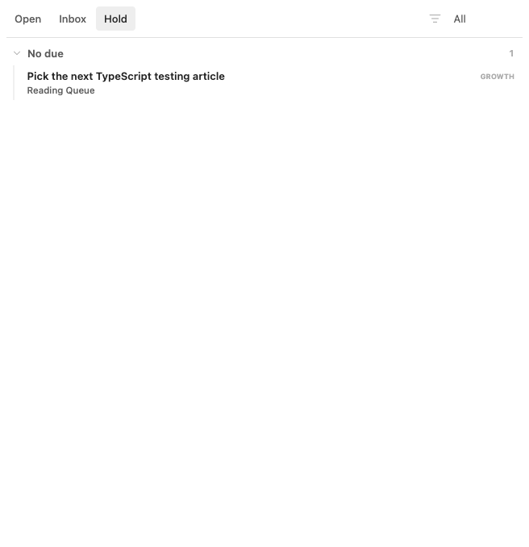
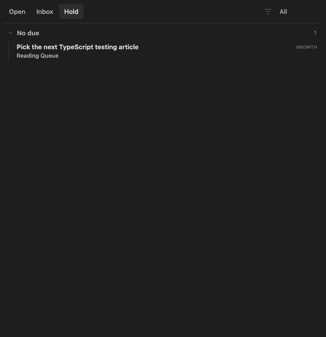

Feature
Hold
A backlog board for notes with status: hold, kept visible without mixing deferred work into the active Open board.
Rationale
Why it exists.
Why Hold Exists
Some work should stay visible without competing with active commitments. Hold is the backlog state for that work: paused ideas, deferred reading, and notes that should remain reviewable but should not appear in the Open board.
Hold uses the same compact row model and context badges as Open so backlog notes
do not need a separate mental model. The difference is selection: a note belongs
to Hold only when its frontmatter says status: hold.
Executable documentation
Acceptance criteria.
- Notes with
status: holdappear in the Hold view. - Notes with
status: opendo not appear in the Hold view. - Hold rows can be narrowed by the same folder-derived context filter as other board rows.
- The Hold documentation screenshot is captured for every configured documentation theme.
Screenshots
Generated by WDIO.



Fixtures
Shared vault examples.
acceptance/fixtures/base/Db/Growth/Reading Queue.md